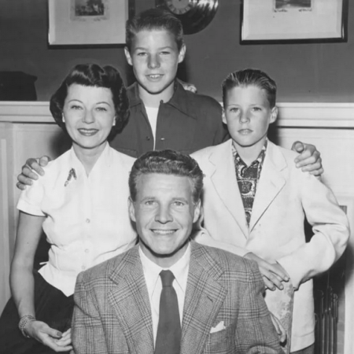

2023-01-28 08:00
Since the midterm elections I have been behaving myself — relatively speaking. No long-winded missives or rants for quite some time. But today I am about to break my streak. There is just too much going on to to remain silent.
For starters, there are the police who just murdered another black man, Tyre D. Nichols.
As a New York Times editorial argues, we have an obligation to view — to face — each one of these abuses of police power — the tortures, the beatings, the tasering, the gassing, the terrorizing of young black men like Mr. Nichols. Each day in America a dozen civilians are killed by police — double that if you factor in the asphyxiations and Taser deaths police inflict on disproportionately people of color.
It can’t go on this way.
We must also acknowledge the humanity, the love of their families, the talents, the potential, and the hopes of each of these victims. Nichols, who was just trying to get home when he was intercepted, dragged from his car, and murdered by a group of thugs with badges, died with his mother’s name on his lips and left behind a portfolio of lovely photography. How is his life any different from yours or mine?
We need to get up off our asses and finally do something to rein in police abuse. While a few people associated with an organization called BLM may have taken some wrong turns, let’s not ignore the point — that Black lives really do matter. Police abuses really are an epidemic and they put all of us at risk.
Sherrilyn Ifill, the former head of the NAACP’s Legal Defense Fund, wrote an excellent response to a piece in the Atlantic by Conor Friedersdorf, who pronounced “Black Lives Matter” a dead letter and argued that public outrage wouldn’t fix bad policing and that, well, police killings are actually fewer than in the past. Ifill tore into Friedersdorf’s flabby and execrable arguments by pointing out that, first of all, the lack of public outrage and apathy is a white people problem. Moreover, Ifill argues, “Whatever modest reforms to policing have been adopted [following BLM pressure], were undertaken after long, pitched battles with those determined to maintain the status quo.” We saw it in the 100% Democratic Party controlled Massachusetts state legislature when the police lobby preserved Qualified Immunity — the license to kill without consequence.
With the murder of a Black man by five Black cops, many have finally realized that it is police training and police institutions which create bad cops — who just happen to police in racist fashion regardless of their own color. Compounding this is the fact that police are organized as paramilitary organizations where target practice is valued more than deescalation, where loyalty to fellow officers counts more than responsibility to the public. Police are truly a gang unto themselves. A few years ago a former California police officer spelled out exactly how the institution corrupts individuals. In his accounting, no cop can completely escape becoming an abuser.
Recent demonstrations over Cop City in Atlanta and the killing of a protester ought to also make us all think twice about America’s growing Police State. Over the strenuous objections of voters, the police lobby succeeded in getting approval for an 85 acre, $90 million (and growing) facility some have described as Fantasyland for cops. And a Police State also means that citizens must be convinced, ham-handedly if necessary, in the eternal good intentions and necessity of the police. We are constantly reminded, via well-placed Copaganda, that Officer Friendly is our pal. Particularly when he’s a “School Resource” officer.
In America everything is ultimately connected in some twisted way to race. In the case of Tyre Nichols’s murder, all five cops were Black. And in the case of Cop City, the City Council that approved the project is majority Black and the former mayor who pushed it is herself Black. Ex-mayor Keisha Lance Bottoms is now working — just as ironic as it sounds — as “Senior Advisor for Public Engagement” in the Biden administration.
So how do we account for this? Is Bottoms a flaming racist? Is Biden a flaming white supremacist? Of course not, but the institutions they work in and through, and to which they have hitched their fortunes, are most definitely racist. Capitalism, colonialism, militarism, white supremacy, and authoritarianism — all have built and corrupted everything they touch. Our Constitution is the rulebook by which our institutions can stack the game against citizens. Racist laws, racist institutions, and racist justice operate by that rulebook have created a nightmare for some of us.
And a culture war is raging about teaching these truths.
We learned this week that the Sports Medicine Committee of the Florida High School Athletics Association wants to make mandatory the reporting of menstrual cycles by female student athletes. The same state — just in time for Black History Month — has also banned the College Board’s Advanced Placement course in AP African American Studies. In fact, Florida teachers now face felony charges if they use non-approved textbooks in their classrooms. You can view the AP African American History course framework here. The AP course consists of four principal units: Origins of the African Diaspora; Freedom, Enslavement, and Resistance; the Practice of Freedom (including a critical view of Reconstruction); and (most damning) Movements and Debates (including anti-colonial responses to slavery and the Civil Rights Movement). Somehow, Florida did not feel the need to ban AP European History which also covers philosophical and political debates. Just not Black ones.
What Florida Republicans have done is to edit out Blacks from American history in exactly the same manner that Nazis did in removing Jews from Germany’s civil service and its cultural institutions. Before they really got going.
Hitlerjugend (Hitler youth)
If you think Florida is an outlier, you would be wrong. Local school boards and librarians are under attack by town Republican committees all over the country. The Massachusetts ACLU points out that a very small minority of ultra-conservatives is responsible for all the noise. This may or may not be the case, as it has been my observation that much of this is the work of Republican Town Committees. Indeed, virtually every Republican in Congress mouths these same sentiments.
In the Tri-Town area [of SouthCoast Massachusetts] a couple of Republican hacks are trying hard to do their own impressions of Florida Governor Ron DeSantis. Joe Pires worries that Diversity and Equity committees are harming white students. Pires also doesn’t like library books that represent the identities and concerns of gay kids. Well, too damn bad! Schools and libraries are for all the children in a community — not just for kids whose parents look like Ozzie and Harriet.
 Ozzie and Harriet was a television program in the 1950’s
Joining town Republicans like Pires with precisely the same views and similarly attacking marginalized members of society are neo-Nazis and Proud Boys who use physical intimidation as they did recently in Fall River. If attacks like these on gay and brown and black children and their families don’t concern you, they are precisely the same tactics the Hitlerjugend and Brownshirts used in Germany of the Thirties. As a famous German theologian famously observed, first they come for the “other”; then suddenly it’s you. Contact the SouthCoast LGBTQ+ Network if you want to help fight back.